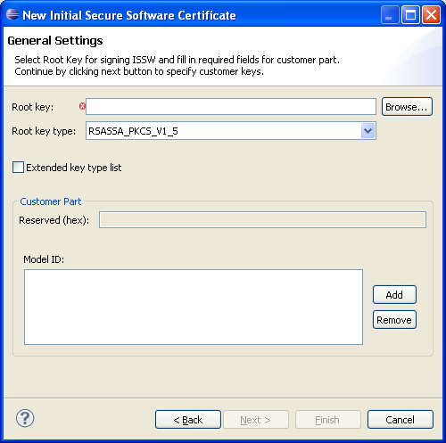
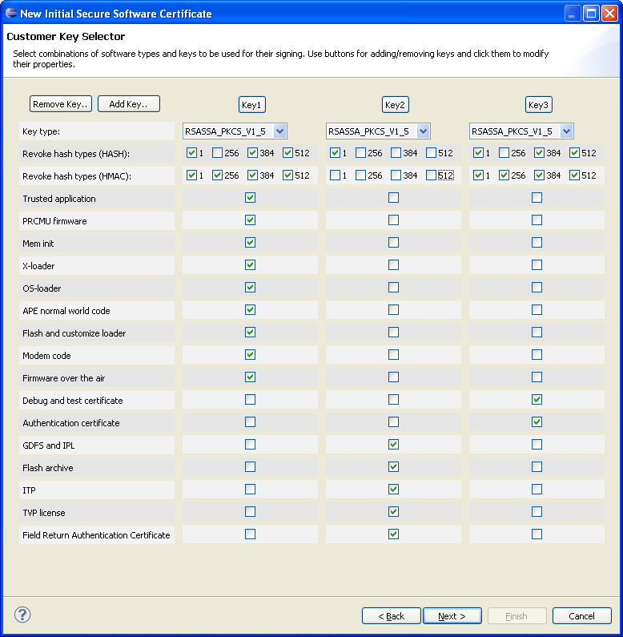
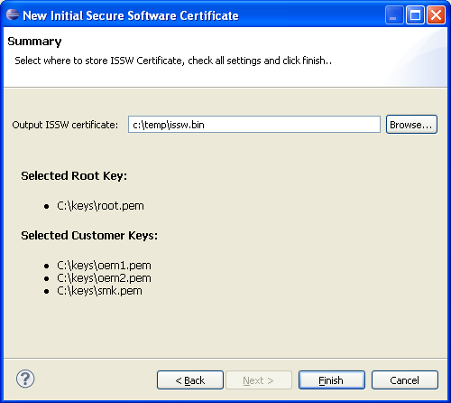

An ISSW certificate is a binary file that can be used as input when creating a U5500/U8500/M7400/L9540 root sign package. It contains information about the keys used to verify the ME software
Please make sure that you have access to a public or private RSA root key in PEM format.
Open the ISSW Certificate Wizard by completing the following steps:
The wizard will appear and the user must fill in correct values in order create the certificate
Page 1:
Page 2 lets the user select which keys to use for signing of different types of software:

Click the "Remove Key" or "Add Key" buttons to display the wanted number of keys.
To select the path to a key, click the button (e.g "Key1") at the top of the key column.
To revoke hash algorithm, (HASH), (HMAC), check the checkbox for the corresponding hash type which should be revoked.
Check a software type to enable signing of it using the selected key. Only one key can be used for each software type.
On page 3 you must specify where to create the new ISSW certificate:
A summary of which keys you have selected will be displayed.